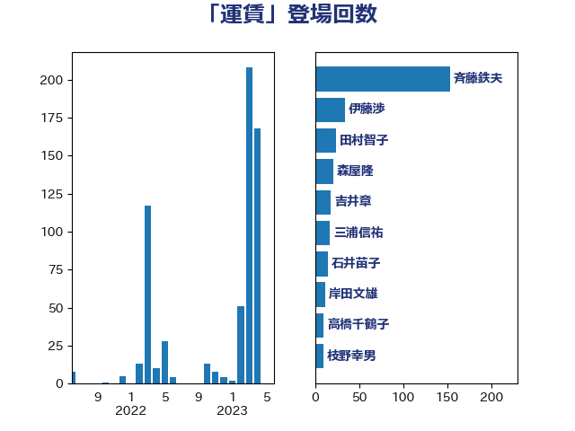

単語「運賃」

| 斉藤鉄夫 | 公明党 | 153 回 |
| 伊藤渉 | 公明党 | 34 回 |
| 田村智子 | 日本共産党 | 24 回 |
| 森屋隆 | 立憲民主党 | 21 回 |
| 吉井章 | 自由民主党 | 18 回 |
| 三浦信祐 | 公明党 | 17 回 |
| 石井苗子 | 日本維新の会 | 15 回 |
| 岸田文雄 | 自由民主党 | 12 回 |
| 高橋千鶴子 | 日本共産党 | 10 回 |
| 枝野幸男 | 立憲民主党 | 10 回 |
| 輿水恵一 | 公明党 | 8 回 |
| 田村まみ | 国民民主党 | 8 回 |
| 芳賀道也 | 国民民主党 | 6 回 |
| 神津たけし | 立憲民主党 | 6 回 |
| 小沢雅仁 | 立憲民主党 | 6 回 |
| 阿達雅志 | 自由民主党 | 5 回 |
| 赤羽一嘉 | 公明党 | 5 回 |
| 末松義規 | 立憲民主党 | 5 回 |
| 山本剛正 | 日本維新の会 | 5 回 |
| 一谷勇一郎 | 日本維新の会 | 5 回 |
| 鬼木誠 | 立憲民主党 | 4 回 |
| 若松謙維 | 公明党 | 4 回 |
| 石井浩郎 | 自由民主党 | 4 回 |
| 浜口誠 | 国民民主党 | 4 回 |
| 津島淳 | 自由民主党 | 4 回 |
| 福島伸享 | 無所属 | 3 回 |
| 小沼巧 | 立憲民主党 | 3 回 |
| 伊藤岳 | 日本共産党 | 3 回 |
| 金城泰邦 | 公明党 | 2 回 |
| 豊田俊郎 | 自由民主党 | 2 回 |
| 西村康稔 | 自由民主党 | 2 回 |
| 緑川貴士 | 立憲民主党 | 2 回 |
| 簗和生 | 自由民主党 | 2 回 |
| 石川香織 | 立憲民主党 | 2 回 |
| 渡辺猛之 | 自由民主党 | 2 回 |
| 山際大志郎 | 自由民主党 | 2 回 |
| 山田勝彦 | 立憲民主党 | 2 回 |
| 塩田博昭 | 公明党 | 2 回 |
| 伊藤孝江 | 公明党 | 2 回 |
| 三反園訓 | 無所属 | 2 回 |
| 高橋光男 | 公明党 | 1 回 |
| 野田国義 | 立憲民主党 | 1 回 |
| 野村哲郎 | 自由民主党 | 1 回 |
| 里見隆治 | 公明党 | 1 回 |
| 酒井庸行 | 自由民主党 | 1 回 |
| 近藤和也 | 立憲民主党 | 1 回 |
| 足立敏之 | 自由民主党 | 1 回 |
| 谷公一 | 自由民主党 | 1 回 |
| 西田実仁 | 公明党 | 1 回 |
| 米山隆一 | 立憲民主党 | 1 回 |
| 笠井亮 | 日本共産党 | 1 回 |
| 竹内真二 | 公明党 | 1 回 |
| 窪田哲也 | 公明党 | 1 回 |
| 石原宏高 | 自由民主党 | 1 回 |
| 永井学 | 自由民主党 | 1 回 |
| 武部新 | 自由民主党 | 1 回 |
| 森田俊和 | 立憲民主党 | 1 回 |
| 梅谷守 | 立憲民主党 | 1 回 |
| 東国幹 | 自由民主党 | 1 回 |
| 末次精一 | 立憲民主党 | 1 回 |
| 木原稔 | 自由民主党 | 1 回 |
| 斎藤アレックス | 国民民主党 | 1 回 |
| 庄子賢一 | 公明党 | 1 回 |
| 川合孝典 | 国民民主党 | 1 回 |
| 山口那津男 | 公明党 | 1 回 |
| 小島敏文 | 自由民主党 | 1 回 |
| 宮本徹 | 日本共産党 | 1 回 |
| 宮崎雅夫 | 自由民主党 | 1 回 |
| 和田政宗 | 自由民主党 | 1 回 |
| 加藤鮎子 | 自由民主党 | 1 回 |
| 佐藤公治 | 立憲民主党 | 1 回 |
| 伊佐進一 | 公明党 | 1 回 |
| 中川康洋 | 公明党 | 1 回 |
| 中山展宏 | 自由民主党 | 1 回 |
| 下条みつ | 立憲民主党 | 1 回 |
| 上野賢一郎 | 自由民主党 | 1 回 |
| たがや亮 | れいわ新選組 | 1 回 |